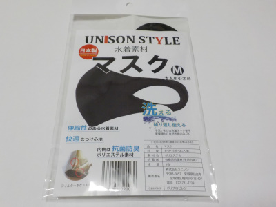

楽天モバイルに加入しました。
2021/04/01

1年間無料に引かれて楽天モバイルに入りました。
回線が1年無料で機械も無料って凄いです。加入に2年縛りみたいなものはないので、1年使ったらペナルティーなしでやめれます。（SIMの返却手数料はあるかも。）
なので気軽に入りました。
まだ私の家には楽天回線が来ていないのでau回線が月5ギガまで高速通信で、それを超えたら低速通信での使用になります。
近いうちにエリア内になるはすなので、高速で使い放題になると思います。
今持っているスマホの契約を安いプランに変更して節約しようかな。
出雲の飲食店応援プレミアム付食事券にケーキ屋さんがありました。
2020/07/15
出雲市民限定ですが、プレミアム食事券にお店リストにリビドー洋菓子店出雲店がありました。
喫茶スペースがあすので食事券があってもいいかなーと思います。
ってことはクリスマスケーキが買えるかもしれませんね。
3000円で5000円のケーキが買えるかもしれませんね。
ケーキ屋のケーキが安く買えるってなかなかないですよね。とってもお得です。
食事スペースがあるパン屋さんも登録されているので、パンがお得に買えるかもしれません。
年末まで使えるので、年越しそばも買えますね。
当たって欲しいなー。
しまねプレミアム飲食券を買いたいけど、なんか面倒ですね。
2020/07/11
4000円で6000円分食べれるお得な商品券なので欲しいと思います。
でも申し込みして自宅で券をもらうのが嫌かな。
山陰中央新報の販売店の人は何時ごろにやってくるんだろう。こうゆう内容は電話でやりとりするんだろうな。
郵便振替にすれば勝手にポストに入っているのかな？
詳しいことは今のところホームページに書かれていないため不明です。
山陰中央新報の販売所で買えればいいのに。
県庁で休日に販売すればいいのに。
ウエルネスで水着マスクを購入しました。
2020/07/11

不織布のマスクが暑くてつらいので、洗える水着マスクをウエルネスで買いました。
1枚税込み767円なので高級ですね。ウエルネスのポイント10倍レシートを使ったので実際は700円を切る値段になります。
日本製、繰り返し洗って使える、伸縮性のある水着素材、内側は抗菌防臭素材って書いてあると妥当な値段な気もします。
700円あったら100均ダイソーで3枚110円のマスクが19枚分買える計算になります。
私は不織布のマスクを1回で使い捨てないです。毎回洗う手間を考えたら60回くらい使いたいですが、それくらい持つかなー？
今回マスクで一番気になるのは暑さです。
着けてみた感想ですが、暑いのは暑いけど不織布よりはいいかなと思いました。
不織布のマスクはプリーツが広がって鼻の上から首近くまでスッポリ入るんですが、この水着マスクはそれよりちょっと小さめなので、肌の露出が多い分涼しかったです。
呼吸もしやすかったので、息がこもるのが少ないと思いました。
耐久性があれば文句ないかな。
夜洗ったら朝には自然乾燥で乾くので、これから毎日使おうと思います。
これでマスク探しのストレスから解放されるといいんだけどな。
ウエルネスでお肉を買ったら0ポイントでした。
2019/10/18
ウエルネスはお肉が安いのでたまに買うんですが、レシートを見たら今回発生ポイントが0ポイントでした。
ポイント対象外商品なんですね。
今日はポイント5倍だ！とか10倍だ！って買ったことがあるんですが、0ポイントだったんですね。
なんかガッカリ。混雑したお店に買いに行く必要なかった。
ウエルネスのポイントの付き方を調べました。
通常100円で1ポイントです。（一部対象外商品がございます。タバコ、酒類、雑誌・書籍、補聴器、商品券、プリペイドカード、ハガキ・切手・印紙、宅配便料金、公共料金等収納代行サービス、整骨院、一部化粧品、一部指定ごみ袋、一部キャンドゥ商品、その他一部対象外商品）
何気に一部対象外が多いかも。
ウエルネスで年に10万円以上買う人は100円で2ポイント。20万円以上買う人は100円で3ポイント付くようです。
年に20万円買い物する人はポイント10倍の日だと、3割り引きみたいな感じになっていいですね。
買い物をいっぱいする人ほどお得になっているんですね。
私は沢山買い物しないので損なのかな。